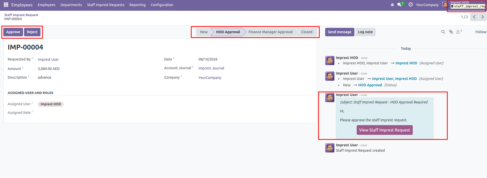
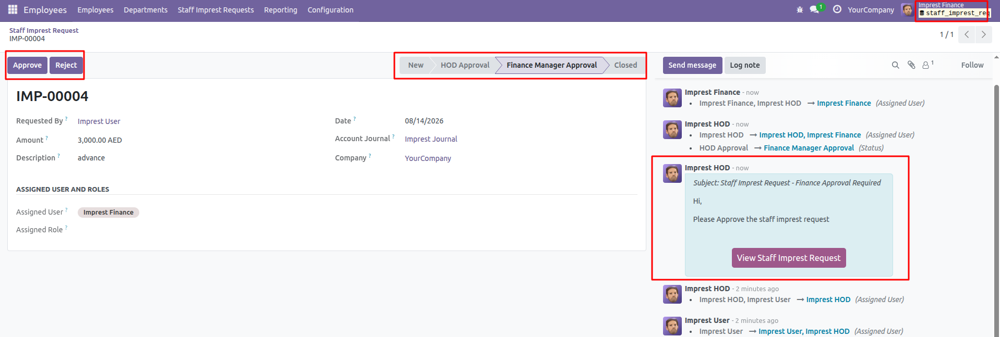
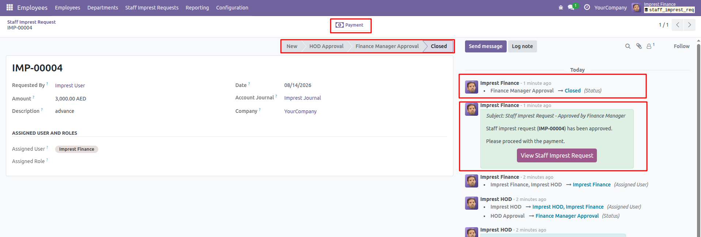
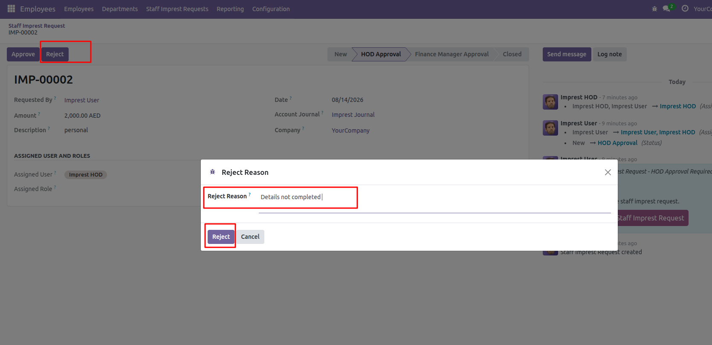
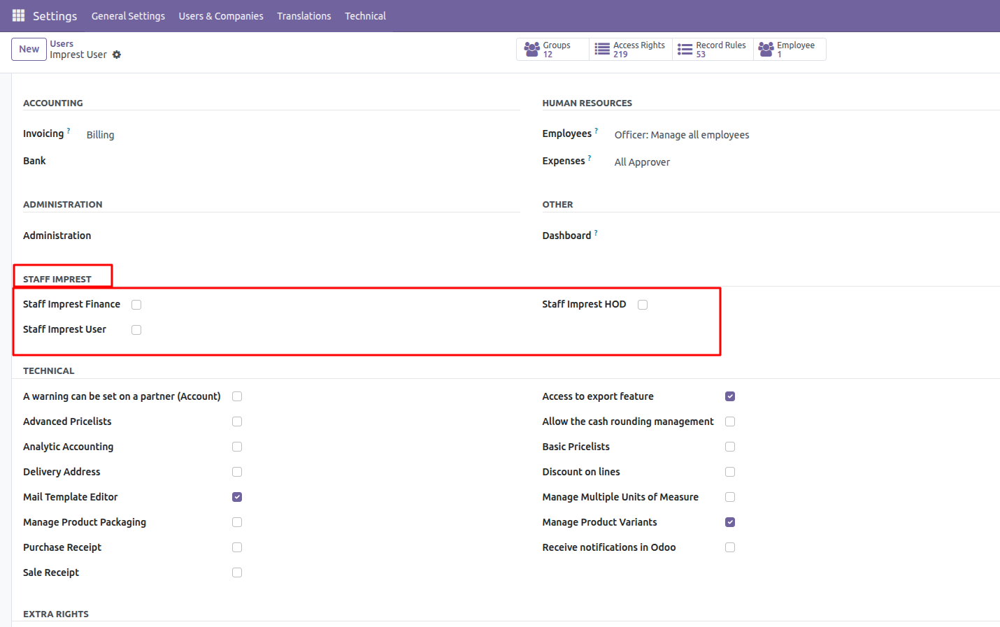

Staff Imprest Request & Approval Workflow helps organizations manage employee imprest requests from submission to final approval and payment. The module provides a structured approval flow involving the HOD and Finance Manager, with status tracking, rejection reasons, notifications, user assignment, and payment processing.
Create staff imprest requests with the required amount, date, description, company, and accounting journal details.
Submitted requests can be reviewed and approved by the assigned Head of Department before moving to Finance.
HOD-approved requests are forwarded to the Finance Manager for financial review and approval.
Requests can be rejected with a specific reason, making the decision clear to the requester.
Notify responsible users when approval is required and inform requesters when their request is approved or rejected.
Track each request through New, HOD Approval, Finance Manager Approval, and Closed stages.
Configure and assign the users responsible for different stages of the imprest approval workflow.
Once the request receives final Finance approval, the payment action becomes available for processing.
Manage the complete imprest approval process through a simple and transparent workflow.
If a request is rejected during the approval process, the rejection reason is recorded and communicated to the relevant user.

Review the staff imprest request and process it through the HOD approval stage.

Once approved by the HOD, the request is assigned to the Finance Manager for financial approval.

After Finance approval, the request reaches the Closed stage and the payment action becomes available.

Reject an imprest request with a clear reason and communicate the rejection to the requester.

Configure the users responsible for the different stages of the imprest approval workflow, including the Imprest User, Imprest HOD, and Imprest Finance.
Notify the responsible user when an imprest request requires approval.
Keep users informed when a request is approved, rejected, or moved to the next approval stage.
Track status changes, assigned users, approval activities, and request communication from the request form.
Replace informal approval processes with a clear, step-by-step workflow.
Easily identify the current status, assigned users, and approval stage of every request.
Approval and rejection activities are recorded with the responsible users and rejection reasons.
A practical solution for organizations that need a controlled workflow for staff imprest requests, multi-level approvals, rejection management, notifications, and payment processing.
Grow with Odoo
Odoo Development, Customization & Business Solutions
Website: achaodoo.com
Email: hello.achaodoo@gmail.com